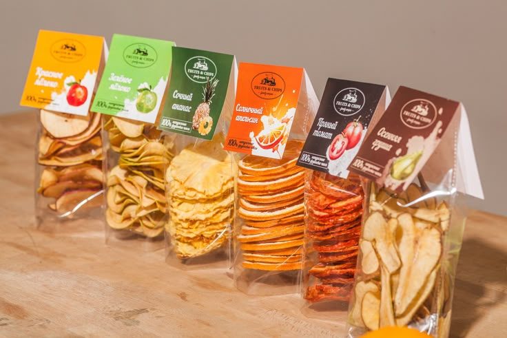
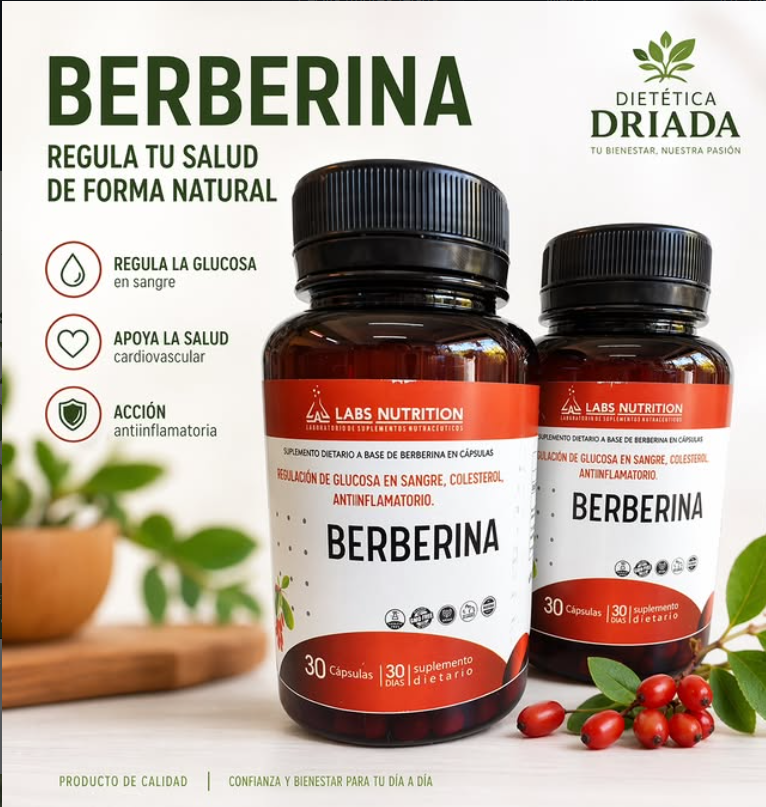
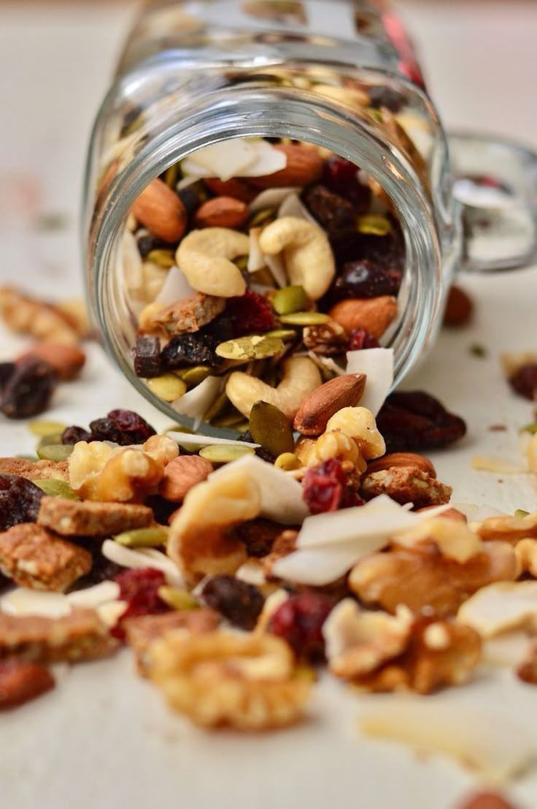
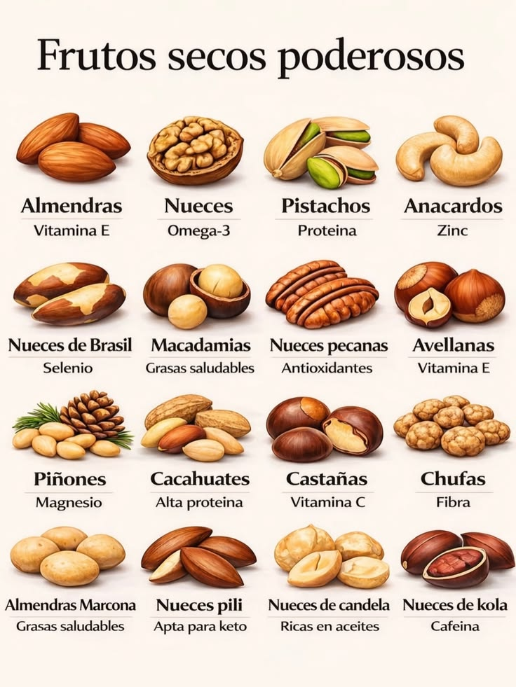
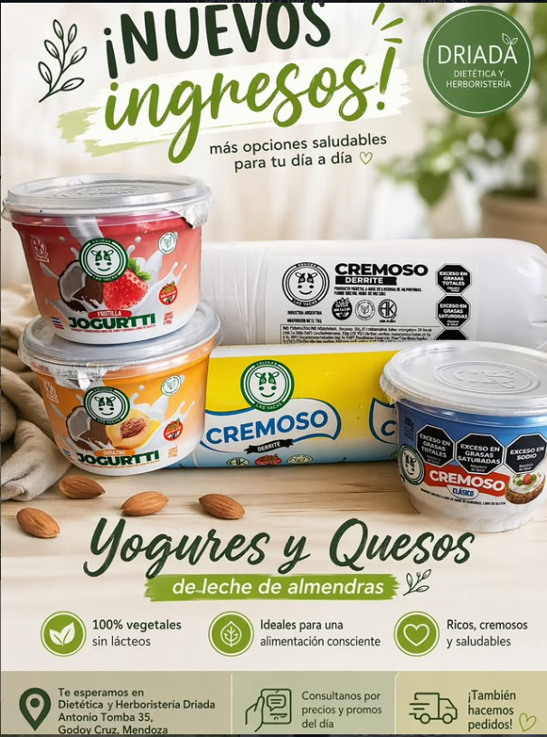
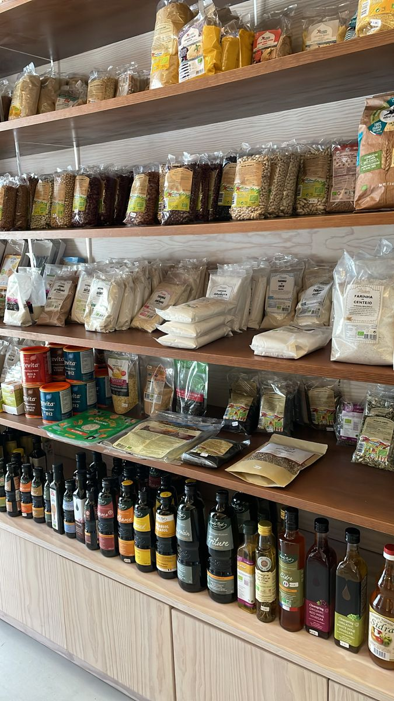

🌱 Alimentación consciente
Productos naturales y orgánicos que cuidan tu salud y el medio ambiente.



Descubrí nuevas combinaciones y disfrutá cada momento.
Conocé nuestros productos
Driada · natural y rico

Productos naturales y orgánicos que cuidan tu salud y el medio ambiente.

Frutos secos, cereales y suplementos para mantener tu cuerpo activo y equilibrado.

Yogures y quesos sin lácteos, ideales para dietas veganas o intolerancias.
Elegí tus favoritos
Frutos secos, cereales y suplementos para mantener tu cuerpo activo y equilibrado.

Consultanos